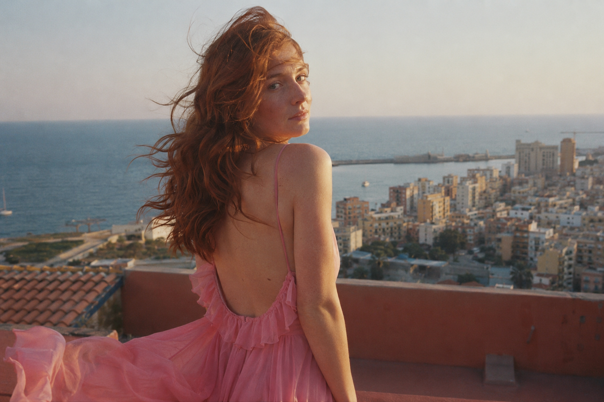
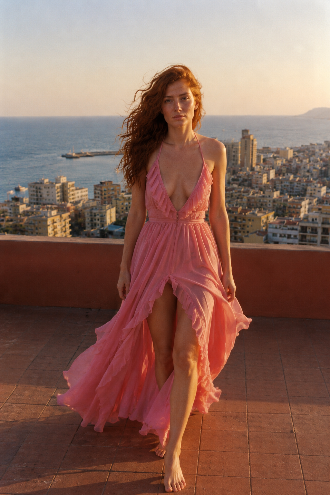
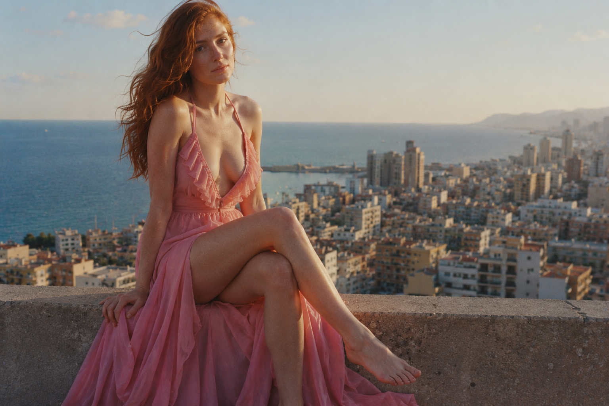

01
GOLDEN HOUR — TC 00:04
L'Arrivée

Elle regarde par-dessus son épaule avant même d'être arrivée — la ville en contrebas, le dos nu qui capte encore le dernier soleil.
02
GOLDEN HOUR — TC 00:11
La Marche

La fente s'ouvre à chaque pas, le décolleté ne demande rien — la robe marche presque toute seule.
03
GOLDEN HOUR — TC 00:18
La Pause

Assise sur le muret, jambes croisées — le tissu retombe en tas plutôt qu'en drapé, et c'est exactement ce qu'il faut.
04
SUNSET — TC 00:27
Le Coucher
Le soleil descend derrière elle, un verre posé à côté — la soirée n'a pas vraiment de fin, juste un endroit où elle s'arrête de raconter.